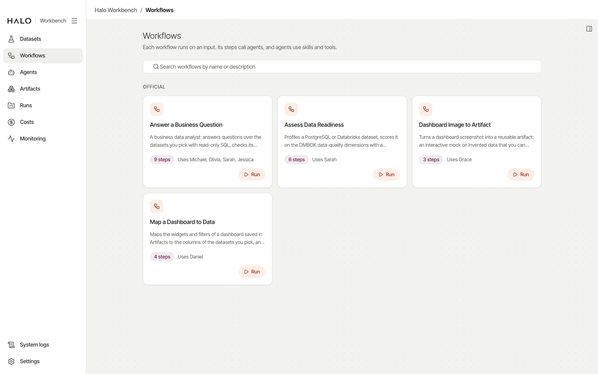

Step 01
Pick a workflow and the data it may read.
A workflow is a job with a defined input: answer a business question, assess a dataset's readiness, turn a dashboard screenshot into a working artifact, or map a saved dashboard onto your columns. Point it at a dataset — the tables you chose from a Databricks SQL warehouse or a PostgreSQL database — and it works over those, nothing wider.
